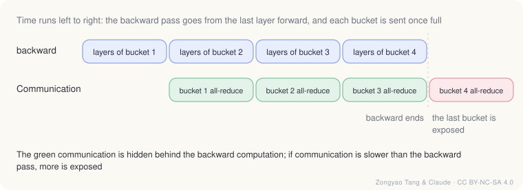

The thread: the simplest way to parallelise is to put a copy of the model on every GPU and have each compute part of the data → how to keep its communication from slowing training down, and the answer is buckets and overlap → how to measure whether it is done well, and how to investigate when it is not → finally, where its ceiling is, which leads into the next unit. This unit joins the all-reduce of part 6 to the autograd of part 2, and it is also the situation you face most often when troubleshooting multi-GPU performance.
Part 7 · Distributed training7.1 Data parallelism with DDP
Translated by AI (Anthropic's Claude) from the Chinese edition. The Chinese original is the reference.
This unit answersHow do you make N GPUs train close to N times as fast?
Follows 6.1: all-reduce is used to build the most common form of parallelism.
- Data parallelism: a full copy of the model on every GPU, each taking part of the data
- Gradient buckets: communicating while the backward pass runs
- Scaling efficiency: multi-GPU throughput ÷ (single-GPU throughput × number of GPUs)
- DDP's cost: every GPU stores a whole copy of the model and the optimizer state
Explanation
1Data parallelism: a full copy of the model on every GPU, each taking part of the data
Each GPU runs the forward and backward passes on different data, then all-reduce averages the gradients. All GPUs make the same update with the same gradients, so the copies of the model always stay identical.
Start N processes, each in charge of one GPU. At every training step:
- Each process takes a different batch from the dataset (a distributed sampler makes sure there are no repeats).
- Each runs the forward and backward passes, computing its own gradients.
- All-reduce sums the N sets of gradients and divides by N, so every process gets the same "average gradient".
- Each updates its parameters with this gradient.
Because the initial parameters are the same (broadcast at start-up), and the gradients used at each step are the same too, the N copies of the model always stay identical, with no need to synchronise parameters separately.
Why it is equivalent to a large batch. A batch's gradient is by definition the average of the gradients of its samples. N GPUs each computing B samples and then averaging gives, mathematically, the same gradient as one GPU computing N×B samples. So data parallelism does not change the training algorithm; it only spreads the computation of one large batch across N GPUs.
This brings a consequence that is easy to overlook: if the number of GPUs goes from 1 to 8 and the batch on each GPU stays the same, the effective batch becomes 8 times as large. Hyperparameters tied to batch size, such as the learning rate and the number of warm-up steps, may have to be adjusted along with it (1.3). Conversely, to keep training behaviour unchanged, cut each GPU's batch to an eighth, but then each GPU may not be kept busy.
In PyTorch. Wrap the model in
DistributedDataParallel, and the rest of the training code needs almost no change. It does only two things: in the forward pass it calls your model as it is; in the backward pass it starts all-reduces at the right moments. "The right moments" are the heart of this unit; see the next card.The similarly named
DataParallelis a different, earlier approach (one process, several threads, the model copied to every GPU at each step); it is held back by the GIL and is no longer recommended.An analogyLike several cooks each making a batch of dishes from the same recipe book, then gathering everyone's feedback at the end and revising the recipe book together.
So DDP is mathematically equivalent to training with an N times larger batch; when the number of GPUs changes, hyperparameters such as the learning rate may need adjusting to match.
Used later in DDP's cost: every GPU stores a whole copy of the model and the optimizer stateThe larger the scale, the more failures are the norm: one machine is reliable, thousands multiplied together are notA distributed training job is a set of Pods that know each otherSourcesAccelerate: synchronisation and all-reduceAccelerate DistributedDataParallelDDP paper, page 3, §3: system designDDP paper, page 4, §3.1: the interface- The most direct way is to finish the whole backward pass, then do one all-reduce over all the gradients. Then communication and computation come one after the other, and the communication time is added in full to every step.
2Gradient buckets: communicating while the backward pass runs
Backpropagation computes from the last layer backwards, and gradients are produced batch by batch. DDP divides the gradients into several buckets, and as soon as a bucket is full it starts an all-reduce, running at the same time as the backward computation of earlier layers.
The DDP paper lays out the design space clearly; it can be seen as a compromise between two extremes.
Extreme one: synchronise each parameter tensor separately. Whenever backpropagation computes the gradient of one tensor, all-reduce it at once. The advantage is that communication starts as early as possible. The disadvantage is far too many calls: a model has hundreds of parameter tensors, many of them small. As 6.1 said, every collective operation has a fixed latency, and the time of hundreds of small communications goes almost entirely on latency.
Extreme two: synchronise once after everything is computed. The fixed latency is paid only once, but communication has to wait for the backward pass to end before starting, and the two do not overlap at all.
The compromise: buckets. Put the parameter tensors in order into several buckets, each filling up to a certain size (25 MB by default). Once the gradients of all the tensors in a bucket are computed, start one all-reduce for that bucket. So:
- The number of communications drops from hundreds to a few dozen or fewer, spreading the fixed latency thin.
- When the first bucket is ready the backward pass has only just begun, and its all-reduce runs at the same time as the backward computation of the layers after it.

Communication and the backward pass overlapping in time The order of the buckets is crucial. Backpropagation computes from the last layer to the first, so the parameters near the output are ready first. DDP fills buckets in the reverse of the order in which parameters were registered, so that the order in which buckets become ready roughly matches the order of the backward pass: each time the backward pass advances a stretch, a bucket can be sent. If the bucket order does not match the order gradients become ready (say a bucket mixes parameters of the last layer and the first), the bucket has to wait until the backward pass is nearly over before it can be sent, and the overlap is lost. So newer versions rearrange the buckets once after the first step, by the order of readiness actually observed.
Bucket size is an adjustable knob (
bucket_cap_mb):- Too small: back to extreme one, with a larger total of fixed latencies.
- Too large: back to extreme two, with less overlap; and each communication occupies the link for longer.
The paper's measurements show that a suitable bucket size can make a difference of several times, and that the best value depends on the model and the network.
How "send as soon as ready" is done. DDP hangs a hook on each parameter's gradient (an autograd hook). As 2.2 explains, the autograd engine calls the hooks hung on a gradient each time it finishes computing one. What the hook does is simple: mark this parameter as ready; if that makes its bucket fully ready, and all earlier buckets have been sent, start this bucket's all-reduce. Starting it is asynchronous: the hook returns at once and the backward pass carries on. After the whole backward pass ends, DDP waits for all the all-reduces to complete, then writes the results back into each parameter's gradient.
Two ideas from 0.1 are used here at once: batching (the buckets) and filling the waiting with other work (the overlap).
Source walkthrough: where DDP's gradient synchronisation lives
DDP's code is in two layers, Python and C++. The file paths are from PyTorch 2.x; go by the version you have when reading.
The Python layer:
torch/nn/parallel/distributed.py. TheDistributedDataParallelclass is here. Only two places are worth looking at:- The constructor: collects the model's parameters, calls a C++ function to work out "which parameters go into which bucket", then creates the C++
Reducerobject. The constructor's arguments (bucket_cap_mb,find_unused_parametersand so on) are all used here. forward: before calling your model, tells the Reducer "a new step has begun"; afterwards returns the model's output unchanged.
The C++ layer:
torch/csrc/distributed/c10d/reducer.cpp. The real logic is in theReducerclass. Read it in the time order of one training step:- At construction: registers a hook on the gradient accumulation node of each parameter.
autograd_hook: called when some parameter's gradient has been computed. It callsmark_variable_ready.mark_variable_ready: copies the gradient into the bucket's buffer and decrements the bucket's "pending" count. When it reaches zero, it callsmark_bucket_ready.mark_bucket_ready: sends out all the buckets that are ready, in order, callingall_reduce_bucketfor each.all_reduce_bucket: calls the process group'sallreduce, gets back a handle representing "this asynchronous operation", and stores it.finalize_backward: called after the whole backward pass ends. Waits for all handles to complete, divides the results in the buckets by the number of processes, and writes them back into each parameter's.grad.
Further down:
ProcessGroupNCCL.cpp(in the same directory). This is whereallreducebecomes a call to NCCL. It puts the NCCL calls on a separate CUDA stream, so they do not block the stream the backward computation uses (streams are covered in 3.6).Read with three questions in mind:
- If some parameter takes no part in the computation at this step (say the model has a conditional branch), its hook is never called, and its bucket can never fill up. How does DDP deal with this? (This is what
find_unused_parametersis for: after the forward pass it walks the computation graph and marks unused parameters as ready directly. The walk itself has a cost, so it is off by default.) - With gradient accumulation you do not want to synchronise at every step; what then? (The
no_synccontext: inside it the hooks do nothing and gradients only accumulate locally; the first backward pass after leaving the context synchronises them all together.) - Are the bucket buffers allocated afresh at every step? (No: they are allocated at construction and reused.)
An analogyLike loading lorries to ship goods: as soon as the first goods fill a lorry, send it off, without waiting for everything to be packed.
So ideally communication is almost entirely hidden by the backward computation; when the model is very small or the network very slow, it cannot be hidden, and multi-GPU scaling efficiency drops.
Builds on Communication time = fixed latency + data size ÷ bandwidthThe GPU does not avoid waiting; it fills the waiting with other workSourcesDDP paper, page 4, §3.2: two extremes of gradient synchronisationDDP paper, page 5: buckets, hooks and bucket orderDDP paper, page 7: tunable parameters- Whether buckets and overlap are done well needs a number to measure it.
3Scaling efficiency: multi-GPU throughput ÷ (single-GPU throughput × number of GPUs)
Ideally N GPUs give N times the throughput; in practice there is always a discount: the part of communication that cannot be hidden, the synchronisation wait while the slowest GPU holds everyone up, and lower utilisation as each GPU's share of the batch gets smaller.
Scaling efficiency = total throughput of N GPUs ÷ (throughput of 1 GPU × N).
When measuring, make sure the numbers are comparable: each GPU's batch size the same as in the single-GPU baseline (this is called weak scaling). Then ideally each GPU does exactly the same work as when alone, and total throughput should be exactly N times.
The reasons it actually falls below 1 can be sorted by the four waits of 0.1:
One: communication not hidden (waiting for the other GPUs). Ideally every bucket's all-reduce finishes during the backward pass. In practice the last few buckets become ready only as the backward pass is nearly over, so their communication is bound to be exposed; if communication is slower than the backward pass, even more is exposed. You can estimate it: the total bytes of gradients ÷ the algbw measured in 6.3 is one step's communication time. Compare it with one step's backward time: far smaller, and communication can basically be hidden; close to it or more, and it cannot.
So on the same network, large models actually scale well more easily: the backward pass is long, with enough computation to cover the communication. Small models, crossing machines and slow networks are the hardest combination.
Two: waiting for the slowest process (waiting for the other GPUs). In synchronous training, an all-reduce can finish only when every process has arrived. If any process is slow, all the others wait. As 6.3 said, the cause of such "slowness" often has nothing to do with communication.
Three: data supply falling behind (waiting for data). Data loading being enough for one GPU does not mean it is enough for 8: each of the 8 processes has its own set of workers, and together they may exceed the number of CPU cores, or use up the storage's read capacity.
Four: communication and computation competing for the GPU (waiting on compute). NCCL's channels occupy SMs (6.2). When communication overlaps the backward pass, the backward pass has fewer compute resources. So even if communication is completely "hidden" in the backward pass, the backward pass itself gets a little slower.
How to look. Increase the number of GPUs step by step from 1 to 2, 4, 8 (first inside one machine), then to 16, 32 (across machines), and note the efficiency at each level:
- Dropping already inside the machine: suspect the third and fourth kinds first, then communication inside the machine taking the wrong road (6.3).
- Very good inside the machine, falling as soon as it crosses machines: the gap in communication bandwidth (5.1) means communication can no longer be hidden, or the cross-machine road is wrong.
- Worse the larger the scale: the network's routing and congestion (5.3), or slow nodes becoming more and more likely.
Troubleshooting: scaling efficiency on 8 GPUs is only sixty percent; how to find the cause
Suppose one GPU handles 1000 samples a second, and 8 GPUs only 4800 in total, an efficiency of 60%. Work through the steps below; each one rules out or confirms one kind of cause.
Step one: confirm the baseline is comparable. Do single-GPU and multi-GPU runs use the same per-GPU batch, the same precision and the same compilation settings? Was the single-GPU baseline measured on the same machine, on the same GPU?
Step two: take communication away. Have the 8 processes each train independently, without synchronising gradients (for example, each process runs its own copy of a single-GPU script, bound to its own GPU).
- Each process still gets only around 600: the problem has nothing to do with communication. The 8 processes are competing for some other resource, most often the CPU and storage. Check whether the CPU is saturated; try halving the number of DataLoader workers per process; or feed one fixed batch over and over to rule out data loading completely.
- Each process is back to 1000: the problem is in the synchronisation, so carry on.
Step three: estimate how long communication should take. Total gradient size = number of parameters × bytes per gradient. Measure these 8 GPUs' algbw with the method of 6.3, and divide to get one step's communication time. Compare it with one step's backward time.
- Communication time far below backward time, yet efficiency is poor: communication is not being overlapped, or is waiting for a slow node. See steps four and five.
- Communication time already close to backward time: communication is too slow. Go back to 6.3 and check whether the road is right and bandwidth reaches expectation.
Step four: look at the timeline. Capture a few steps with
torch.profilerand find NCCL's all-reduces on the timeline (they are on a separate stream).- The all-reduce blocks overlap the backward kernels in time: the overlap is working.
- After the backward pass ends there is a long stretch with only all-reduce and no computation: this is the exposed communication. Try adjusting
bucket_cap_mb(say from 25 to 50 or 100, or smaller) and watch how this stretch changes. - The first bucket is sent very late: the bucket order does not match the order gradients become ready. Check whether
find_unused_parametersis on, and whether the model has parameters that take no part in the computation at every step.
Step five: find the slow node. Record for each process the time spent "waiting for synchronisation" in each step. All processes have the same total time per step, but different waiting times: the process that waits least is the one everyone is waiting for. Go and see why it is slow: its data loading, whether its CPU cores are taken by someone else, its GPU's temperature and clock speed (
nvidia-smi -qhas the throttling information).Step six: a few synchronisation points that are easy to miss. Calling
.item()or printing the loss at every step of the training loop; logging, evaluation and checkpointing done only on process 0 (the other processes wait for it at the next synchronisation point); synchronised batch normalisation (one more collective operation per layer).Note down the numbers at every step. In the end you should be able to break "the forty percent lost" into a few items: how much is exposed communication, how much waiting for a slow node, how much data.
An analogyLike moving house with several people helping: more people raise the pace, but also add time spent coordinating and waiting for each other.
So before adding GPUs, measure scaling efficiency, going from 1 GPU to 2 and 4 step by step to see where efficiency drops, and judge whether the bottleneck is communication, synchronisation waits or data loading.
Builds on Measure first, then optimise: the bottleneck is often not where you thinkGradient buckets: communicating while the backward pass runs"Slow" on the pipeline comes in only four kinds: waiting for data, on compute, for orders, for the other GPUsTwo bandwidths: algbw is what you experience, busbw is for comparing with the hardwareUsed later in Collection and learning separated: many actors, a few learnersCase two: 8 GPUs, only 5 times the speedSourcesDDP paper, page 8, evaluation: communication's share of a stepPyTorch docs: Distributed Data Parallel design notes- Suppose communication is completely hidden and efficiency is close to 1. Data parallelism still has a problem that adding GPUs cannot solve.
4DDP's cost: every GPU stores a whole copy of the model and the optimizer state
Data parallelism divides only the data, not the model. However many GPUs there are, the parameters, gradients and optimizer state on each GPU are not reduced at all.
What data parallelism splits is the data. Each GPU still has:
- a whole copy of the parameters;
- a whole copy of the gradients;
- a whole copy of the optimizer state;
- the activations produced by its own batch.
Adding GPUs only means more data is processed at once; not a single byte of the first three items goes away. So once a model is so large that these three together exceed one GPU's memory, more GPUs do not help.
What can ease it is all limited: make each GPU's batch very small (fewer activations, but the first three items stay the same); make up the effective batch with gradient accumulation (slower); recompute activations to save memory (activation checkpointing). None of them touches the root: those three items are proportional to the size of the model.
Look at the problem from another angle: 8 GPUs hold 8 identical copies of the parameters and optimizer state. The same thing stored 8 times over is pure redundancy. The next unit starts from exactly this sentence: since everyone stores the same thing, could each GPU store just an eighth?
An analogyLike every branch of a shop needing a full set of equipment: open as many branches as you like, and the equipment cost of each one is not reduced by a penny.
So once a model is too large to fit on one GPU, DDP can do nothing, and this is exactly the problem ZeRO and FSDP (7.2) set out to solve.
SourcesZeRO paper, page 2: memory redundancy in data parallelism
Putting it together
Data parallelism has each GPU compute part of the data, then averages the gradients with all-reduce. To keep communication from slowing training down, DDP puts gradients into buckets and sends each bucket as soon as it is ready, overlapping with the backward computation still in progress. Whether it is done well is measured by scaling efficiency, and the reasons it drops are always communication that cannot be hidden, waiting for a slow node, or data not arriving fast enough. DDP's ceiling is memory: every GPU stores a whole copy of the model and the optimizer state.
Test yourself
Without looking back at the explanation, say it in your own words.
- How does data parallelism work? Why is it equivalent to training with an N times larger batch?
- Why does DDP put gradients into buckets? What goes wrong with buckets that are too small or too large?
- What is scaling efficiency? What kinds of reasons make it fall below 1?
- Why can data parallelism not be used to train a model too large to fit on one GPU?